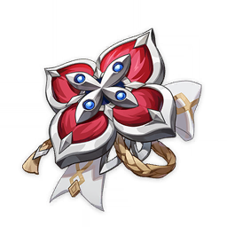
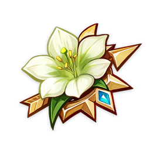

Genshin Impact · Versión 7.2
Mejores Armas
Opciones recomendadas ordenadas por rendimiento según el meta actual y compatibilidad con sus rotaciones:
-
 Allende la Crisálida ★★★★★BiS Firma674 ATQ base, 44.1% Daño Crítico; otorga +56% CD, +36% Daño Torbellino Estelar y 5 Energía.
Allende la Crisálida ★★★★★BiS Firma674 ATQ base, 44.1% Daño Crítico; otorga +56% CD, +36% Daño Torbellino Estelar y 5 Energía. -
 Pluma Invernal Lagoblanco ★★★★★Alternativa 5★674 ATQ base, 22.1% Prob. Crítica; +24% ATQ, +50% CD en Fulgor Estelar y 4 Energía.
Pluma Invernal Lagoblanco ★★★★★Alternativa 5★674 ATQ base, 22.1% Prob. Crítica; +24% ATQ, +50% CD en Fulgor Estelar y 4 Energía. -
 Fulgor Cerúleo ★★★★★Alternativa 5★674 ATQ base, 22.1% Prob. Crítica; +24% ATQ tras Skill (y +24% ATQ / +40% CD con 0 Energía).
Fulgor Cerúleo ★★★★★Alternativa 5★674 ATQ base, 22.1% Prob. Crítica; +24% ATQ tras Skill (y +24% ATQ / +40% CD con 0 Energía). -
 Fuente de Ignición ★★★★Mejor 4★ F2P565 ATQ base, 110 ME; +16% ATQ y +16% Daño Fulgor Estelar al activar reacción.
Fuente de Ignición ★★★★Mejor 4★ F2P565 ATQ base, 110 ME; +16% ATQ y +16% Daño Fulgor Estelar al activar reacción. -
 Filo de la Caza de los Herejes ★★★★Opción 4★510 ATQ base, 27.6% Prob. Crítica y +18–36% ATQ al moverse en combate.
Filo de la Caza de los Herejes ★★★★Opción 4★510 ATQ base, 27.6% Prob. Crítica y +18–36% ATQ al moverse en combate.
Mejores Sets de Artefactos
Combinaciones de 4 piezas o mezclas de 2 piezas para maximizar su contribución:
-

Scarlet Proof (4 piezas) BiS DPS+18% ATQ (2p); +16% Prob. Crítica y +40% Daño Torbellino Estelar durante 10s tras activarlo.
-

Viridescent Venerer (4 piezas) Alternativa+15% Bono Anemo, +20% Torbellino Estelar y -40% RES elemental + Cryo.
Estadísticas Principales y Secundarias
Atributos prioritarios en artefactos para un balance óptimo de daño o soporte:
| Pieza | Estadística Principal |
|---|---|
| Reloj (Arenas) | ATQ% |
| Cáliz | ATQ% |
| Corona | Prob. Crítica / Daño Crítico |
Prioridad de Subestadísticas
- Daño Crítico > Prob. Crítica > ATQ% > Maestría Elemental (120–180).
Prioridad de Talentos
Habilidad Elemental (E) ≥ Definitiva (Q) >>> Ataques Normales
Composiciones de Equipo Recomendadas
Alineaciones con mayor sinergia elemental y amplificación de daño en el Abismo y Teatro Fantasía:
Torbellino Estelar Premium
Vesna • Viajero Cryo • Odette • Faruzan
Con Faruzan C6 maximiza el daño Anemo y mantiene Cryo con Odette.
Torbellino Estelar con Curación
Vesna • Viajero Cryo • Odette • Vodyanitsa
Vodyanitsa aporta curación y vórtice en lugar de Faruzan.
Materiales de Ascensión (Nivel 1 al 90)
Recursos totales requeridos para desbloquear las 6 fases de ascensión de Vesna: